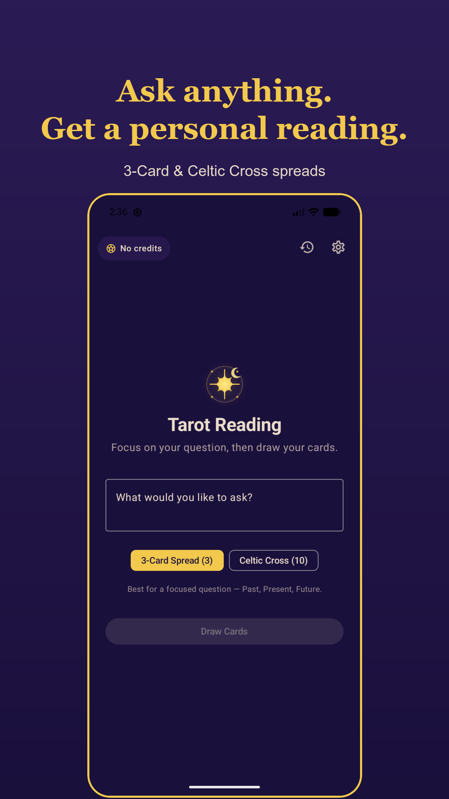
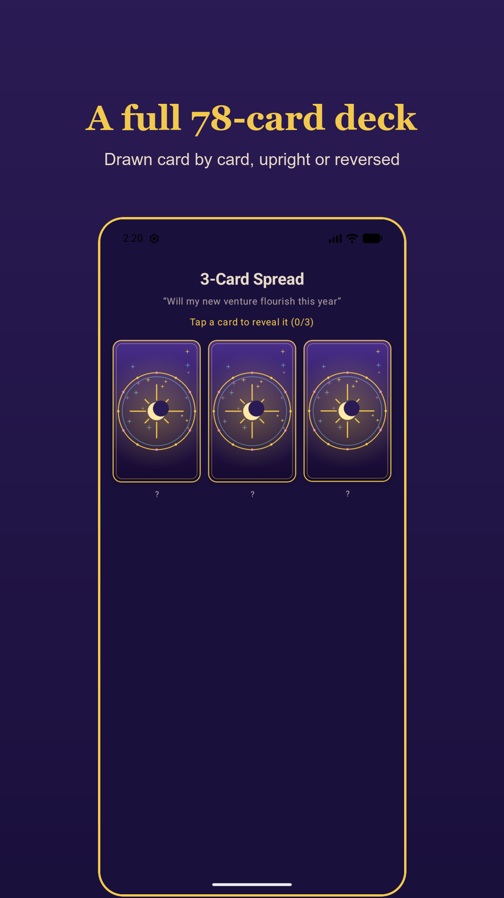
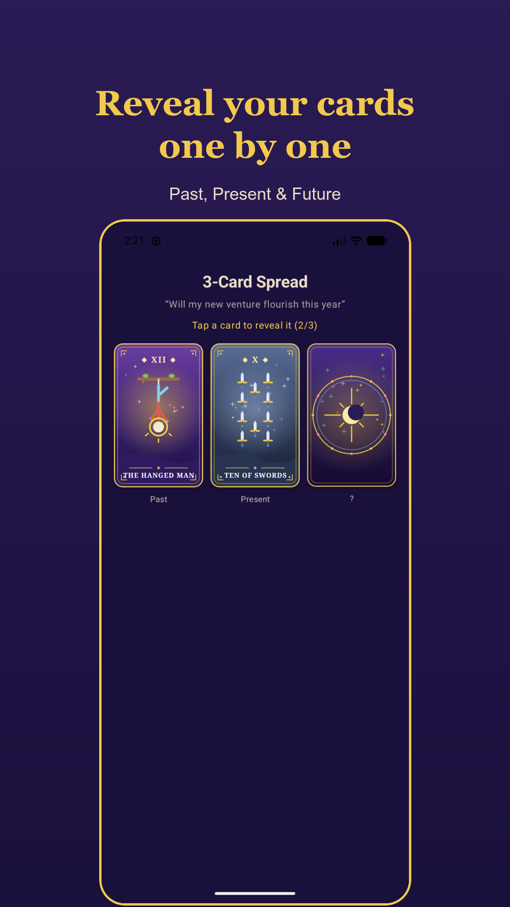
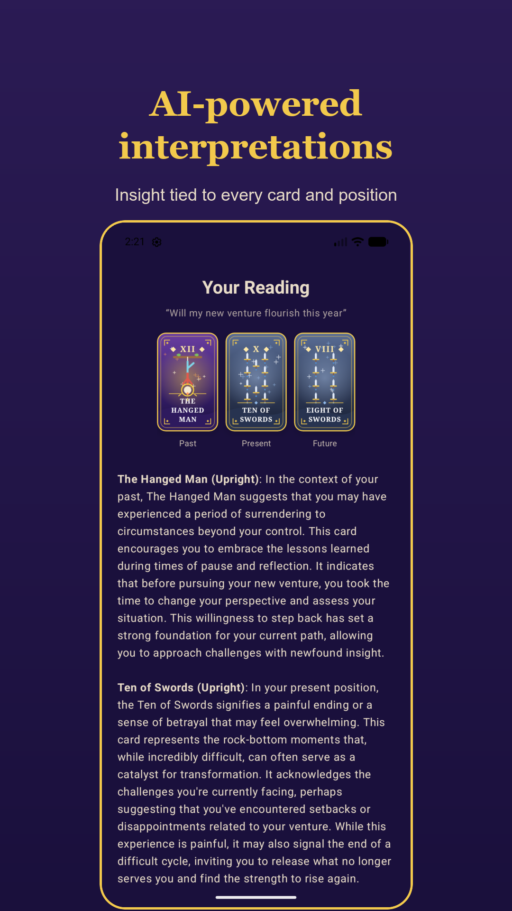
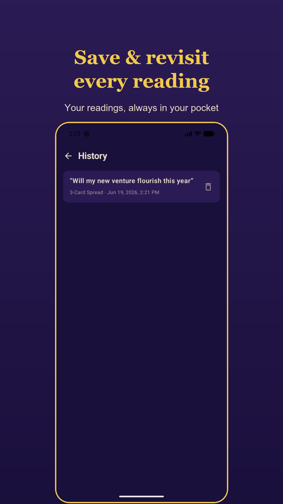
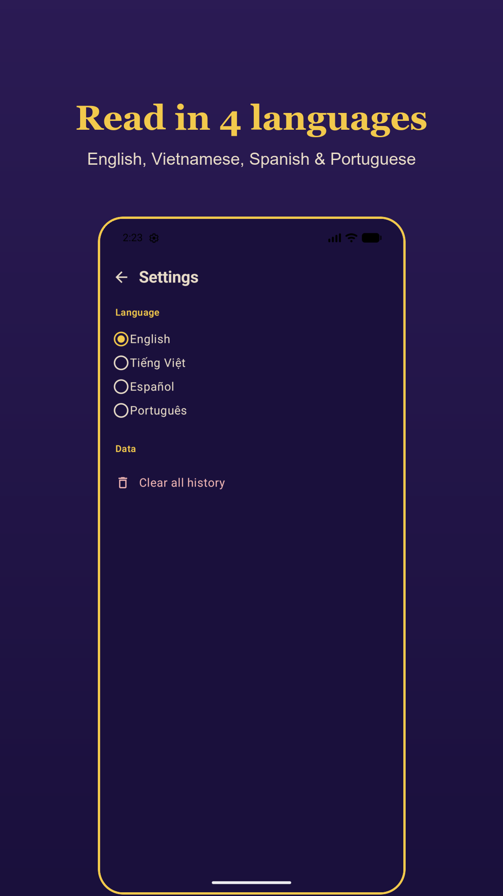

Tarots
Ask. Reveal. Discover.
An AI-powered tarot reader in your pocket. Focus on a question, draw your cards, and receive a personal interpretation drawn from the full 78-card Rider–Waite deck.
Get it onGoogle Play
For entertainment and self-reflection. Not a substitute for professional advice.
What's inside
A reading made for your question
Not a fixed dictionary entry — a fresh interpretation written around what you asked.
AI interpretations
Each card is read in its position and tied to your question, in clear, encouraging language.
Full 78-card deck
The complete Rider–Waite deck — 22 Major and 56 Minor Arcana, upright or reversed.
3-Card & Celtic Cross
A quick three-card spread for focus, or the ten-card Celtic Cross for the full picture.
Save & revisit
Every reading is saved to your history so you can return to its guidance any time.
Four languages
Read in English, Tiếng Việt, Español, or Português — the whole app follows your choice.
Private by design
No account, no sign-up. Your readings live on your device, not in our cloud.
The ritual
Three steps to a reading
Ask
Type the question on your mind and choose a spread.
Reveal
Tap each face-down card to flip it, one by one.
Discover
Read a personal interpretation woven around your question.
Inside the app
See it in motion
A dark, mystical interface with hand-drawn card art and a smooth flip reveal.






The cards are waiting.
Get it onGoogle Play